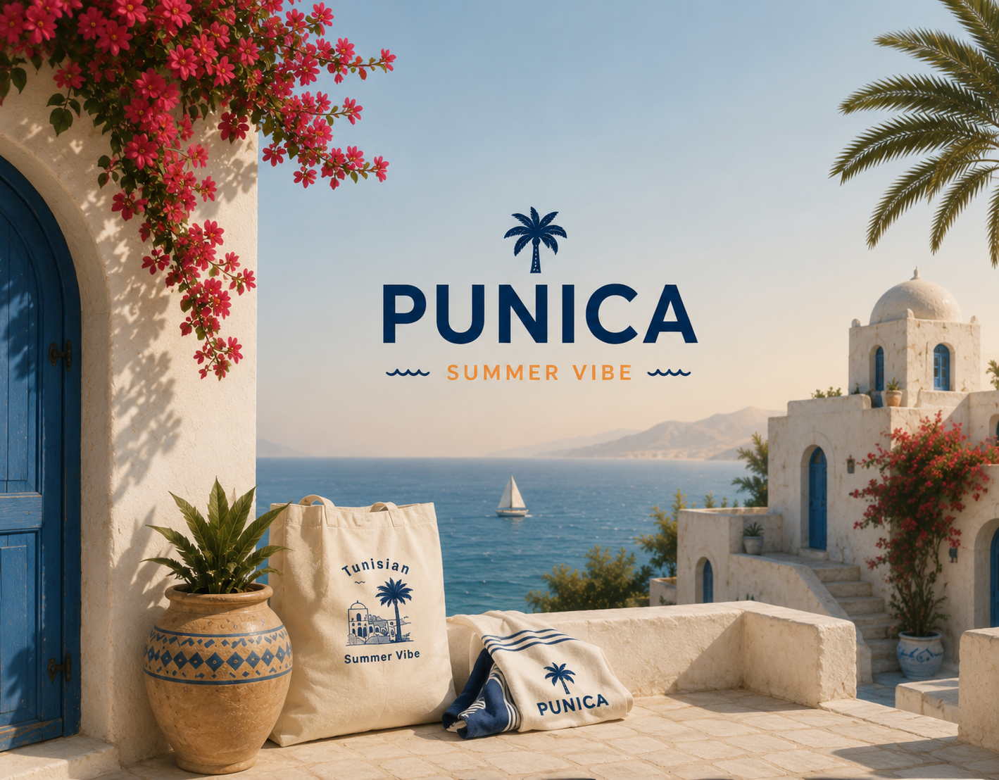
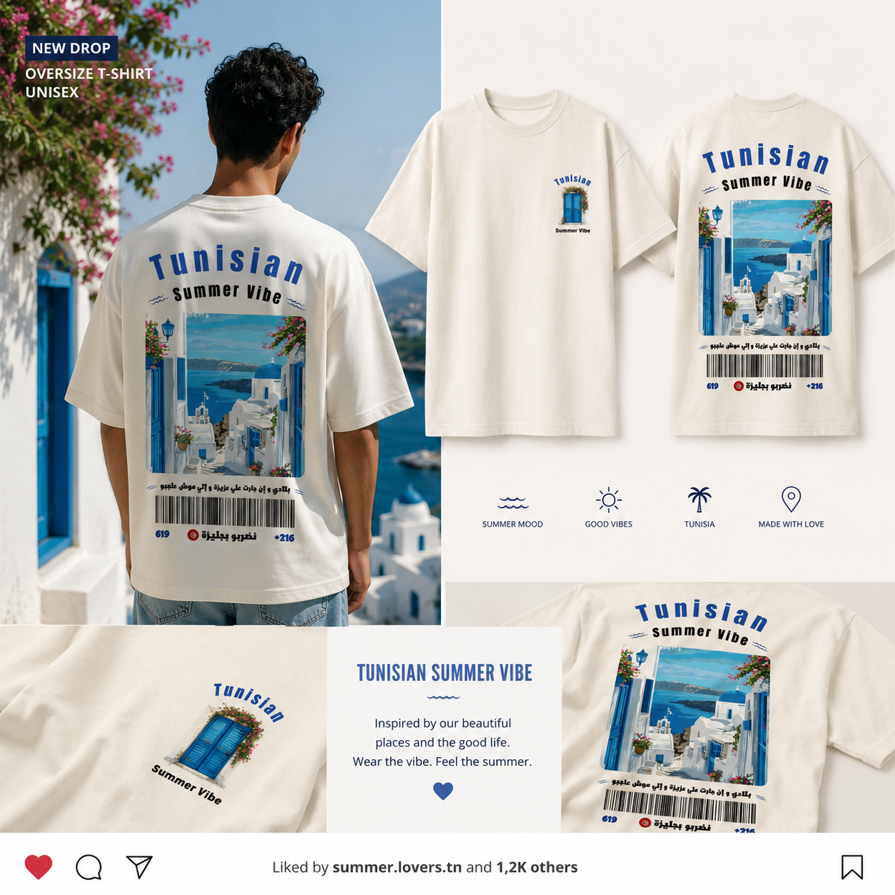

Le nom vient de la grenade — simple dehors, réfléchi dedans. Lin et coton en petites séries, coupés et cousus à Tunis.


01 — WhitewashLe nom latin de la grenade — cultivée sur cette côte bien avant les murs de Carthage.
Nommée pour le fruit, pas l'empire. La Tunisie punique commerçait en teintures et tissus faits pour tenir une traversée — c'est encore notre exigence.
« Une grenade paraît simple jusqu'à ce qu'on l'ouvre. C'est tout le brief. »
Chaque pièce est développée et cousue en petites séries à Tunis, chez des ateliers avec qui nous travaillons depuis nos débuts.